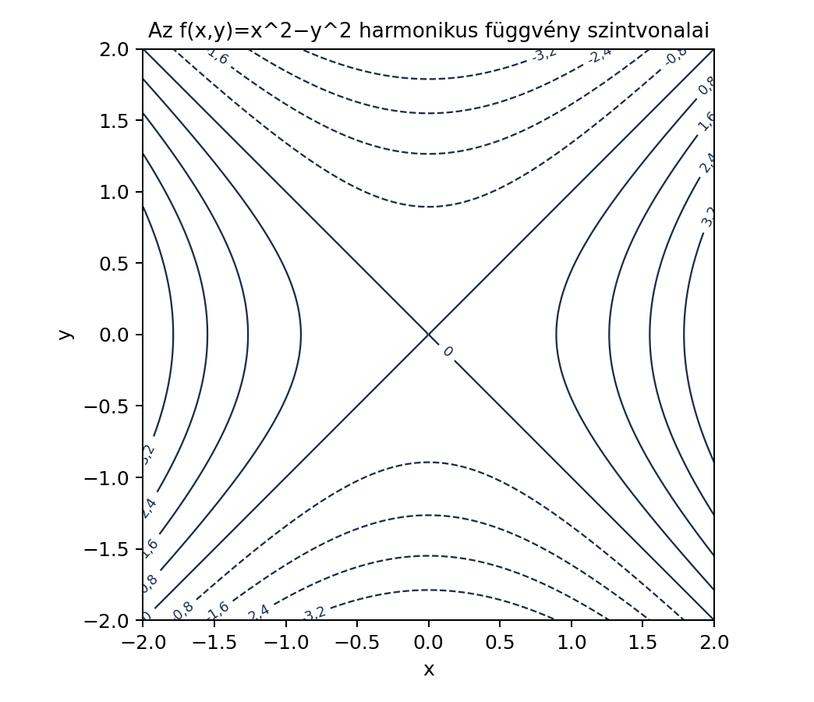

A divergencia (forráserősség) és a rotáció (örvényerősség) elsőrendű
differenciáloperátorok: egy-egy parciális deriválást végeznek. A fizika
alapvető egyenleteiben – hővezetés, elektrosztatika, hullámterjedés,
diffúzió – rendszeresen megjelenik azonban egy
másodrendű operátor is: egy skalármező gradiensének a
divergenciája. Ez a mennyiség azt méri, hogy a függvény értéke mennyire
tér el a környező pontokbeli értékek átlagától, vagy fizikailag:
mennyire „folyik ki” a gradiens által reprezentált áramlás egy kis
térfogatból. Ezt az operátort Laplace-operátornak nevezzük, és a
vektoranalízis egyik központi eszköze.
Ebben az alfejezetben bevezetjük a Laplace-operátort és a
harmonikus függvény fogalmát, bebizonyítjuk a nabla
operátor legfontosabb azonosságait – köztük a két alapvető „nulla
tételt”:
és
–, majd levezetjük a Laplace-operátor polárkoordinátás alakját, és
megmutatjuk, hogy az
függvény a háromdimenziós tér origó nélküli részén harmonikus. Ez utóbbi
eredmény az elektrosztatika és a hőtan klasszikus megoldásainak
kulcsa.
28.3.2 Szemléletes kép
A Laplace-operátor működését jól szemlélteti a nyeregfelület.
Tekintsük az
függvényt. Az
irány mentén a második parciális derivált
,
az
irány mentén
,
így az összegük nulla. A függvény tehát az egyik irányban „felfelé”, a
másik irányban „lefelé” görbül, és a két hatás kiegyenlítődik – a
Laplace-operátor nulla.

Az f(x,y)=x2−y2 harmonikus
függvény szintvonalai - A szintvonalak hiperbolák; a Laplace-operátor
nulla, mert a két főirányú görbület kiegyenlítődik.
Az ábrán a szintvonalak hiperbolákat alkotnak. A nyereg alakú felület
éppen az a tipikus eset, amikor a Laplace-operátor nulla: a függvénynek
nincs „forrásszerű” viselkedése, az egyik irányú konvexitást a másik
irányú konkavitás pontosan kiegyenlíti.
28.3.3 A Laplace-operátor
definíciója
Definíció. Legyen
kétszer folytonosan differenciálható függvény. A
Laplace-operátort (Laplace operator) a gradiens
divergenciájaként értelmezzük:
Ha
egy nyílt halmazon, akkor
-et
harmonikus függvénynek (harmonic function)
nevezzük.
Két dimenzióban a Laplace-operátor
,
egy dimenzióban pedig egyszerűen a második derivált,
.
A definíció közvetlenül általánosítható
-re
a második parciális deriváltak összegeként, de ebben a fejezetben a két-
és háromdimenziós esetre koncentrálunk.
így
.
Ez a függvény nem harmonikus. A pozitív
Laplace-operátor azt jelzi, hogy a függvénynek „forrásszerű” viselkedése
van: a gradiens vektormező divergenciája pozitív, az áramlás kifelé
mutat az origóból.
Példa. Legyen
.
Ekkor
,
,
tehát
,
vagyis
harmonikus. Ez a példa mutatja, hogy a Laplace-operátor nulla lehet úgy
is, hogy a függvény nem állandó.
Példa. A síkon az
függvény az origón kívül harmonikus. Ezt a polárkoordinátás
Laplace-képletből számoljuk ki a későbbiekben.
28.3.5 Nabla-azonosságok
A nabla operátorral való számolás során két azonosság különösen
fontos, mert a fizikai terek szerkezetét rögzíti.
Tétel. Legyen
kétszer folytonosan differenciálható skalármező, és
kétszer folytonosan differenciálható vektormező. Ekkor:
;
;
.
Bizonyítási terv. Mindhárom azonosságot
koordinátánként, a definíciók közvetlen kifejtésével igazoljuk. Az első
két azonosság kulcsa a Young-tétel: a vegyes másodrendű parciális
deriváltak folytonosság esetén egyenlők. A harmadik azonosság a
szorzatszabály vektoros megfelelője.
Bizonyítás.
1. rot grad f = 0. A gradiens
.
A rotáció definíciója szerint:
Az első komponens
.
Mivel
kétszer folytonosan differenciálható, Young-tétel miatt
,
így az első komponens
.
Ugyanígy a második komponens
,
a harmadik pedig
.
Tehát
.
∎
2. div rot F = 0. Legyen
.
Ekkor
Ennek divergenciája:
Kifejtve:
A Young-tétel miatt
,
és
,
így a hat tag páronként kiejti egymást, az összeg
.
Tehát
.
∎
3. Szorzatszabály. Ismét legyen
.
Ekkor
Az egyváltozós szorzatszabályt alkalmazva minden tagra:
Csoportosítva:
∎
Szemléletes jelentés. Az első azonosság azt mondja,
hogy egy konzervatív (potenciálos) vektormező örvénymentes. A második
azonosság szerint egy rotációval előállított vektormező forrásmentes. A
harmadik azonosság a divergencia szorzatszabálya.
Írd fel az operátorok definícióját a megfelelő koordinátás alakban
(gradiens, divergencia, rotáció).
Végezd el a parciális deriválásokat, és írd fel az összes
komponenst.
A vegyes másodrendű parciális deriváltaknál alkalmazd a
Young-tételt, ha a függvény kétszer folytonosan differenciálható.
Csoportosítsd a tagokat, és ellenőrizd, hogy a megfelelő tagok
kiejtik egymást, vagy a kívánt kifejezést adják.
Ellenőrizd a végeredményt egy konkrét példán.
28.3.6 A Laplace-operátor
polárkoordinátákban
Sok hengerszimmetrikus vagy radiális probléma esetén a derékszögű
koordináták helyett polárkoordinátákat használunk. A Laplace-operátor
polárkoordinátás alakját a láncszabály segítségével vezetjük le.
Legyen
,
,
ahol
és
(a megfelelő ágválasztással). Jelölje a polárkoordinátás függvényt
– a jelölés egyszerűsége kedvéért ugyanazt a betűt használjuk. Először
kiszámítjuk az
és
parciális deriváltjait:
A láncszabály szerint az
és
szerinti parciális deriválás operátora:
Ezekkel az operátorokkal kiszámítjuk a második parciális
deriváltakat. Először
és
:
Most alkalmazzuk ismét a deriváló operátorokat. Az
kiszámításához a
operátort alkalmazzuk
-re:
Kifejtve, figyelembe véve, hogy
(Young-tétel), és hogy
,
,
,
:
Hasonlóan,
A két kifejezést összeadva a kevert tagok kiesnek, és használjuk a
azonosságot:
Ez a Laplace-operátor polárkoordinátás alakja a
síkon:
Ellenőrzés. Az
függvényre
,
,
,
így
Tehát
harmonikus a sík origó nélküli részén, ahogy korábban állítottuk.
28.3.7 Laplace-operátor
gömbkoordinátákban
Háromdimenziós gömbszimmetrikus problémákban a gömbkoordinátás alakot
használjuk. A könyv jelöléskonvenciója szerint
a sugár,
a
tengellyel bezárt szög,
az azimut. Ekkor a Laplace-operátor:
Ezt a képletet itt kimondjuk, levezetése a polárkoordinátás esethez
hasonló, de hosszadalmasabb.
28.3.8 Az
függvény harmonikussága
-n
Tekintsük az
függvényt, ahol
.
Kiszámítjuk az első és második parciális deriváltakat:
Hasonlóan a másik két változóra:
Összegezve:
Tehát
harmonikus az
halmazon, vagyis az origót kivéve mindenütt. Az origóban a függvény nem
differenciálható, ezért a Laplace-operátor ott nem értelmezhető;
fizikailag az origóban van a forrás (például ponttöltés vagy pontszerű
hőforrás).
28.3.9 Valós életbeli
alkalmazás
28.3.9.1 Stacionárius hőeloszlás
hengeres csőben
Vizsgáljunk egy nagyon hosszú, henger alakú csövet, amelynek belső
sugara
,
külső sugara
.
A belső felületet
,
a külsőt
hőmérsékleten tartjuk. A cső hosszirányú hőmérséklet-változása
elhanyagolható, ezért a stacionárius hőmérséklet csak a sugártól függ:
.
A hővezetési egyenlet stacionárius esetben, belső hőforrás nélkül, a
Laplace-egyenletre redukálódik:
Hengerszimmetrikus esetben a polárkoordinátás Laplace-képletben nincs
-függés,
így
Ennek általános megoldása
.
A peremfeltételekből:
Innen
,
tehát
.
A hőmérsékleteloszlás:
ahol
centiméterben értendő. Ellenőrzés:
,
.
A gradiens nagysága radiálisan:
így a belső felületen
,
a külsőn
.
A hőáram a Fourier-törvény szerint a gradienssel arányos, tehát a belső
felületen nagyobb, ami a hengeres geometriából következik: ugyanaz az
összhőáram kisebb felületen áramlik át.
A modell korlátja, hogy a csövet végtelen hosszúnak tekintettük, és a
peremfeltételek állandóságát feltételeztük. Valóságos csővégeknél
axiális hőmérséklet-gradiens is kialakulhat.
Az elektrosztatika alapegyenlete szerint a töltésmentes térrészben az
elektromos potenciál
kielégíti a Laplace-egyenletet:
.
Egy origóban elhelyezett
ponttöltés potenciálja a térben:
ahol
.
A fenti levezetésünk szerint
harmonikus az origón kívül, így
minden
pontban. A forrás az origóban van, ezért ott a Laplace-egyenlet nem
érvényes. Ez az eredmény az elektrosztatika klasszikus megoldásainak
alapja, és a Parciális differenciálegyenletek
ízelítő: hővezetés, hullám, Laplace-egyenlet alfejezetben tovább
általánosítjuk.
28.3.10 Tipikus hibák
A vegyes parciális deriváltak egyenlőségének feltétel
nélküli használata. A Young-tétel csak akkor érvényes, ha a
vegyes másodrendű parciális deriváltak folytonosak. Ha ez a feltétel nem
teljesül, a
azonosság sérülhet. A bizonyításokban mindig ellenőrizni kell a
folytonossági feltételt.
A polárkoordinátás Laplace-képlet hiányos felírása.
Gyakori hiba, hogy a tanuló csak az
tagot írja fel, és elfelejti az
és
együtthatókat. A helyes képlet
.
Az
harmonikusságának kiterjesztése az origóra. Az
függvény csak az
halmazon harmonikus. Az origóban a függvénynek szingularitása van, ezért
ott a Laplace-operátor nem értelmezhető, és a Laplace-egyenlet sem
teljesülhet.
A rot grad és div rot azonosságok megfordíthatóságának
feltételezése. Abból, hogy
,
nem következik feltétel nélkül, hogy
valamely
-re;
ehhez a tartománynak egyszeresen összefüggőnek kell lennie. Hasonlóan,
ha
,
abból nem következik minden tartományon, hogy
.
Az azonosságok csak az egyik irányt garantálják.
28.3.11 Önellenőrzés
Igaz-e, hogy ha
kétszer folytonosan differenciálható, akkor
?
Számítsd ki
értékét.
Igaz-e, hogy minden kétszer folytonosan differenciálható
vektormezőre
?
Írd fel a Laplace-operátor polárkoordinátás alakját a síkon.
Harmonikus-e az
függvény a sík origó nélküli részén?
28.3.12 Feladatok
1. feladat (A). Számítsd ki a Laplace-operátort az
függvényre, és döntsd el, harmonikus-e.
2. feladat (A). Igazold koordinátás számolással,
hogy az
vektormezőre
.
3. feladat (B). Igazold, hogy az
függvény harmonikus, és add meg azt a
harmonikus függvényt, amelyre
és
kielégíti a Cauchy–Riemann-egyenleteket (azaz
és
).
4. feladat (B). Polárkoordinátákban add meg az
függvény Laplace-operátorát, és mutasd meg, hogy
harmonikus.
5. feladat (C). Bizonyítsd be, hogy ha
és
kétszer folytonosan differenciálható skalármezők, akkor
6. feladat (D). Egy hosszú hengeres cső belső sugara
,
külső sugara
.
A belső felület hőmérséklete
,
a külsőé
.
Határozd meg a stacionárius hőmérsékleteloszlást
alakban, és számold ki a gradiens nagyságát a belső felületen.
28.3.13 Megoldások
28.3.13.1 Önellenőrzés –
válaszok
Igaz. A rot grad azonosság minden kétszer folytonosan
differenciálható skalármezőre teljesül.
.
Igaz. A div rot azonosság minden kétszer folytonosan
differenciálható vektormezőre teljesül.
.
Igen, mert
,
és a polárkoordinátás képlettel
.
28.3.13.2 1. feladat megoldása
,
;
,
.
Így
,
tehát
harmonikus.
28.3.13.3 2. feladat megoldása
,
tehát
,
,
.
Ennek divergenciája
.
∎
28.3.13.4 3. feladat megoldása
,
;
,
.
Így
.
A Cauchy–Riemann-egyenletekhez
kell, amiből
.
A második egyenlet
,
azaz
,
tehát
,
.
A
választással
.
28.3.13.5 4. feladat megoldása
Polárkoordinátákban
.
Ekkor
A poláros Laplace-képlettel:
28.3.13.6 5. feladat megoldása
A szorzatszabályból indulunk. A gradiensre
.
Ennek divergenciáját vesszük:
Alkalmazzuk a
szorzatszabályt mindkét tagra:
Mivel
és
,
továbbá
,
így
∎
28.3.13.7 6. feladat megoldása
A hengerszimmetrikus stacionárius hőmérsékletre
.
A peremfeltételek:
Innen
,
tehát
.
A megoldás:
ahol
centiméterben van. Ellenőrzés:
,
.
A gradiens radiálisan:
így a belső felületen
.
28.3.14 Rövid összefoglaló
A Laplace-operátor egy kétszer folytonosan
differenciálható skalármezőre a gradiens divergenciája:
(három dimenzióban). Ha
,
a függvény harmonikus. A síkbeli polárkoordinátás alak
,
a gömbkoordinátás alak pedig